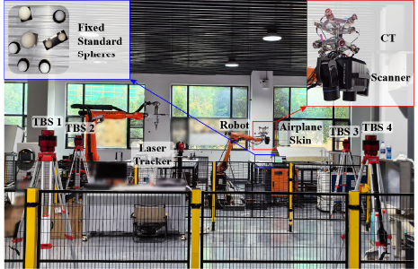
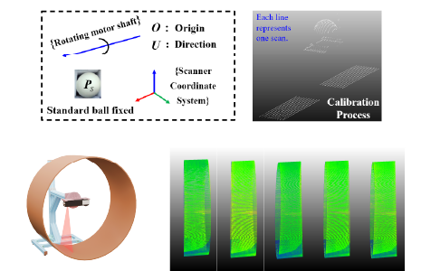
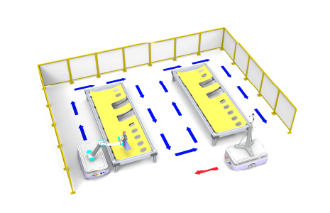
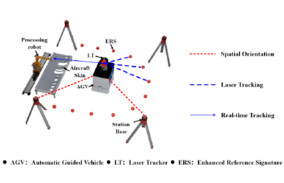
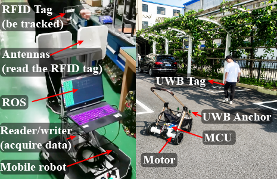

Completed laser tracker-based aircraft skin measurement and point cloud stitching work for a COMAC collaboration.
Sheng Cao's home page
I am a master's student in Mechanical Engineering at Huazhong University of Science and Technology, working in the State Key Laboratory of Intelligent Manufacturing Equipment and Technology. I am supervised by Prof. Wenlong Li.
My work focuses on:
- robotic perception and geometric estimation in large-scale environments;
- point cloud registration, reconstruction, and spatial understanding;
- multi-sensor fusion and calibration for autonomous robotic systems.
I am interested in:
News
Submitted the major-revision version of my first first-author TMECH manuscript.
Chinese invention patent CN116482605B was granted.
Started and led a pipeline inspection project based on rotational line-laser scanning.
Completed my first first-author manuscript, extending my undergraduate thesis, and submitted it to TMECH.
Joined a COMAC collaboration on laser tracker-based aircraft skin measurement.
Started contributing to paper writing as a co-author and technical contributor.
Received my B.Eng. degree and was honored as an Outstanding Graduate.
Started research on large-scale measurement under the guidance of senior colleague Yaming Tian, with plans for an undergraduate thesis.
Recommended for postgraduate study at HUST and joined Prof. Wenlong Li's team in the School of Mechanical Science and Engineering.
Interned at the National Innovation Institute of Digital Design and Manufacturing, working on intelligent robotic-arm grasping.
Interned at Hubei Yangtian Baby Carriage Co., Ltd., working on an intelligent following baby carriage project.
Projects

Geometric Point Cloud Registration for Large-Scale 3D Perception
Developed a distributed measurement framework using a 6-DoF cooperative target for aircraft skin point cloud registration, with Lie algebra-based pose optimization under laser-plane constraints.
Under review at IEEE/ASME Transactions on Mechatronics with major revision.

Line-Laser 3D Reconstruction for Structured Environment Perception
Developed a rotational line-laser scanning system for pipe inspection, with point cloud reconstruction and elliptical-cylinder fitting for end-face geometry estimation.
PipeChina collaboration, Jun. 2025 -- Present.

Multi-Sensor Spatial Alignment for Aircraft Surface Reconstruction
Built software and workflows for a laser tracker, AGV platform, and 3D scanner measurement system, with multi-sensor calibration and coordinate alignment for global point cloud stitching.
Mar. 2025 -- Apr. 2026.

Geometric Calibration and Uncertainty Modeling for Spatial Sensing
Worked on orientation methods and error-field modeling for distributed measurement systems, including bundle adjustment, Lie algebra based modeling, and uncertainty-aware analysis.
Feb. 2023 -- Jul. 2025.

Intelligent Following System Based on Geometric Localization
Developed intelligent following systems using dual-range measurements and a fixed baseline for geometric localization, enabling real-time sensing-control loops. Implemented on phase-based RFID and UWB platforms.
Sep. 2021 -- Jun. 2022.
Publications
Under Review
Global Point Cloud Registration for Aircraft Skin Using a 6-DoF Cooperative Target in Distributed Measurement System
Sheng Cao, Y. M. Tian, H. W. Zhang, W. Xu, and W. L. Li.
Under review at IEEE/ASME Transactions on Mechatronics (major revision). (PDF)
Journal Articles
Orientation of Distributed Measurement Systems Using Improved Bundle Adjustment and Lie Algebra
Y. M. Tian, W. L. Li, Sheng Cao, W. Xu, and H. Ding.
IEEE/ASME Transactions on Mechatronics, 2024.
Journal Articles
Construction of Error Field for Distributed Measurement Systems Using Laser Tracker
Y. M. Tian, W. L. Li, Sheng Cao, W. Xu, and H. Ding.
IEEE Transactions on Instrumentation and Measurement, 2025.
Journal Articles
Global Precision Control for Field Large-Scale Measurement Based on Uniformly Minimum Variance Unbiased Estimate
Y. M. Tian, W. L. Li, H. W. Zhang, Sheng Cao, W. Xu, and H. Ding.
IEEE Transactions on Instrumentation and Measurement, 2025.
Conference Papers
Modeling and Analysis of Measurement Uncertainty for Distributed Measurement Systems
Y. M. Tian, Sheng Cao, W. L. Li, and W. Xu.
Proceedings of ICAIRC, 2024.
Patents
Chinese Invention Patent, CN116482605B
RFID-Based Indoor Full-Positioning Method for Forklifts.
Granted Jul. 29, 2025. First inventor.
Chinese Utility Model Patent, CN220820214U
Measuring Device for Robot Tail-End Pose Compensation.
2024. Student first inventor; second inventor.
Chinese Invention Patent, CN117109581A
Mobile Robot Self-Positioning Navigation Method Based on RFID.
2023. First inventor. (Application published)
Contact
Services
Reviewer
Journals
- IEEE/ASME Transactions on Mechatronics (TMECH)